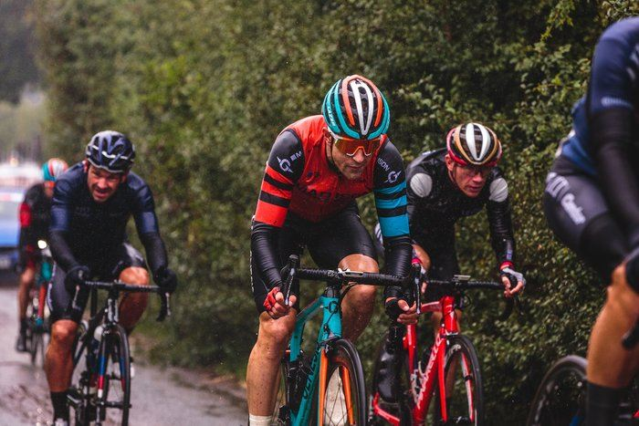

Хей, Райдер! Хочешь попробовать себя в велосипедном спорте, но еще не уверен? Велоспорт определенно не самый сложный спорт в мире. Тем не менее, переменных в этом непростом деле довольно много, а непросвещенных начинающих велосипедистов еще больше. У нас получилось собрать для тебя некоторое количество советов, которыми мы спешим поделиться, будь ты новичок, или просто любопытствующий.
1. Не зацикливайтесь на одном размере рамы.
Производители стараются учитывать параметры среднестатистического человека при постройке очередной рамы. Однако параметры эти могут колебаться от бренда к бренду. Размер 51 см, например, у Bianchi будет соответствовать 48 см у Specialized. Цифры взяты из справочника “Спотолка”, так что не придавайте им особого значения. Другими словами, если вы какое-то время ездили на велосипеде с 19-й рамой, это не значит, что этот же размер вам придется по вкусу у другого бренда. Мне случалось сталкиваться с 19-й ростовкой у бюджетного бренда, она мне более-менее подходила. Но когда я пересел на такой же размер Specialized, я просто лежал на велосипеде, настолько длиннее он оказался. Всего 3 сантиметра, кажется, что это мелочь... но поверьте, даже 5 мм играют существенную роль в посадке, управляемости и скорости велосипеда. Да, можно компенсировать длинную раму коротким выносом, но не все сразу приходит, нужен опыт.
2. Каденс важен.
Есть исследования, в которых выяснилось, что меньший каденс — это родной отец мощности. Однако исследования эти не рассматривали здоровье колен. Исследования же по коленям показывают, что повышенная частота вращения педалей их щадит. Идеальным считается каденс 90 об/мин. Впрочем, у каждого этот показатель свой, но держится он примерно в этих пределах у подавляющего большинства.
3. Купи себе велокомпьютер.
Нет, правда, он достаточно недорого стоит и позволяет отслеживать изменение значения средней скорости. А что может быть лучше осознания того, что ты стал быстрее?
4. Попробуйте поездить в хорошей велоформе.
Вы можете покупать ради комфорта дорогущие шлемы, фонари, колеса, седла, грипсы... но всё это меркнет по сравнению с теми ощущениями, которые дарит действительно хорошая и продуманная велосипедная форма. А именно шорты. Качественный памперс в велошортах повысит ваш комфорт многократно. Словами даже сложно описать, как в них круто ездить. Попробовав после такой одежды обычную, вы поймете жизнь? Мир больше не станет прежним.
5. Не бойтесь движения по дорогам общего пользования.
Если придерживаться элементарных правил дорожного движения, то ездить по дорогам общего пользования становится намного спокойнее. То есть, не стоит вылетать на перекресток первым, не убедившись в отсутствии других транспортных средств, завершающих движение, не стоит проскакивать на мигающие сигналы светофора, пропускайте пешеходов, устанавливайте зрительный контакт с водителем в маневрах которого вы не уверены, коммуницируйте с потоком, обозначайте свои маневры и будет вам счастье.
6. Не стремитесь на первых порах побить все мировые рекорды по скорости и дальности заездов
Все равно сразу ничего не получится. Лучше расслабьтесь и просто получайте удовольствие, прогресс не заставит себя долго ждать. Если ездить все время стиснув зубы, то далеко не уедешь. Даже у бывалых велосипедистов есть понятие “вкатываться”. Они не начинают сезон с рекордов.
7. Выделите на покупку велосипеда максимум средств.
Впоследствии, когда узнаете о велосипедах немного больше, вы себя многократно поблагодарите. Ведь покупая самый дешевый аппарат рискуешь лишить себя радости качественного апгрейда из-за конструктивных особенностей. А желание осуществить апгрейд рано или поздно приходит.
8. Всегда пользуйтесь велофарами.
Даже днем. Даже, когда солнце в зените! Велосипедный свет делает вас намного заметнее в общем потоке. У нас, кстати, есть статья, где мы объясняем необходимость применения велосвета.
9. Следите за своим велосипедом.
Он вас за это отблагодарит исправной работой в любых условиях и на любых дистанциях. Запущенный велосипед всегда будет создавать кучу проблем и забирать лишние силы на борьбу с ними.
11. Выходите из зоны комфорта, бросайте себе вызов, это всегда интересно.
Друзья зовут поехать туда, где вы бы сами никогда не оказались? Соглашайтесь. Боитесь, что велосипед неподготовлен достаточно для такого маршрута? Вы просто попробуйте. Любые приключения, почти, вас только наполнят. В любом случае, получите незабываемые приключения и крутую историю в копилку.